结论：偏弱震荡，上证 3673.47（-0.19%）、创业板 -1.00%、科创50 +2.44%，3750 未破仍弱势，两市放量至昨日全天 82.7%。核心警示：半导体今日量已赶上昨日全天，临近压力，不追。算力硬件 +1.51% 仍强，人形机器人 -4.04%、AI 视频 -2.24% 调整。总仓 ≤4 成；13 只标的全无买点。
上证 3673.47（高 3699.58 低 3669.64），3750 未破，老师「仍看成弱势」成立。分化在成长端内部：科创50 +2.44%（半导体带动），但创业板 -1.00%——最高 2620.25 回落至 2546.23（-2.8%）。两市成交额 13854.6 亿 = 昨日全天 16762.7 亿的 82.7%，放量确认。
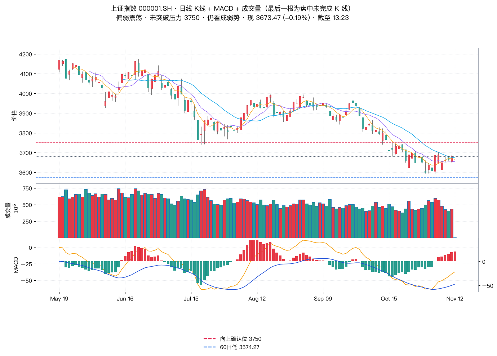
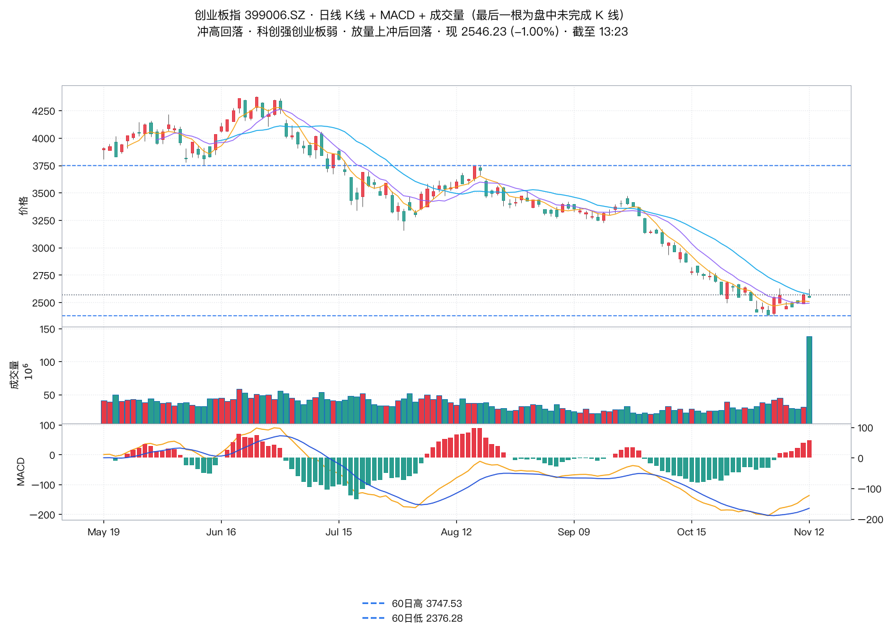
| 方向（自建篮子） | 均值 | 涨/样本 |
|---|---|---|
| 算力硬件 | +1.51% | 6/11 |
| 半导体 | +0.90% | 6/8 |
| 防守/消费 | +0.69% | 7/10 |
| CPO/光模块 | +0.68% | 6/12 |
| 电子化学品 | -0.72% | 4/10 |
| 端侧AI | -1.46% | 2/10 |
| AI视频/传媒 | -2.24% | 2/12 |
| 人形机器人 | -4.04% | 0/18 |
| 标的 | 现价 | 老师定性 | 实测印证（日线） | 动作 |
|---|---|---|---|---|
| 药明康德 | 150.17 (+0.99%) | 对称震荡，等共振 | 振幅大；凯莱英 +1.26% 同步 | 观望 |
| 中国船舶 | 34.26 (+0.59%) | 高开，仍没止跌 | 高开 34.40，未破昨收，无买点 | 不操作 |
| 瑞芯微 | 226.94 (-3.43%) | 倾向拉回小中枢震荡 | 下午续跌至 226.94，未拉回 | 等拉回 |
| 伊利股份 | 30.92 (+1.01%) | 倾向破 30.46 再拉回 | 最低 30.50，差 0.04 未破；无有力度底分型 | 等条件 |
| 中文在线 | 27.84 (-5.27%) | 等破 30.38 出三买 | 最高 29.49，离 30.38 更远 | 等突破 |
| 海天瑞声 | 128.90 (-11.46%) | 等对称震荡形成 | -11.46%，最低 126.89，远未形成 | 不追 |
| 奥普特 | 158.98 (-8.50%) | 等破 186.8 或回调 140 | 最高 173.97 未触；最低 157.60，距 140 还有 -11.2% | 新增观察 |
| 柯力传感 | 55.94 (-2.54%) | 等顶分型调整充分（53） | 最低 55.66，未到 53 | 新增观察 |
| 兆易创新 | 262.22 (+1.00%) | 分型确认中，临近压力 | 冲高 273.68 回落；量达昨日 87% | 不追 |
| 云铝股份 | 23.49 (+0.34%) | 不满足方法条件 | 缩量，仅昨日 39% | 不操作 |
| 模塑科技 | 16.28 (-4.74%) | 等顶分型形成 | 最高 16.99 < 昨收，确未新高 | 等形成 |
| 汉威科技 | 41.32 (-4.42%) | 顶分型已出，下午留意 | 下午 -4.42%，最低 40.86 → 兑现 | 警示中 |
| 长盈精密 | 29.26 (-3.27%) | 等破 32.08 | 最高 30.39，离 32.08 尚远 | 等突破 |
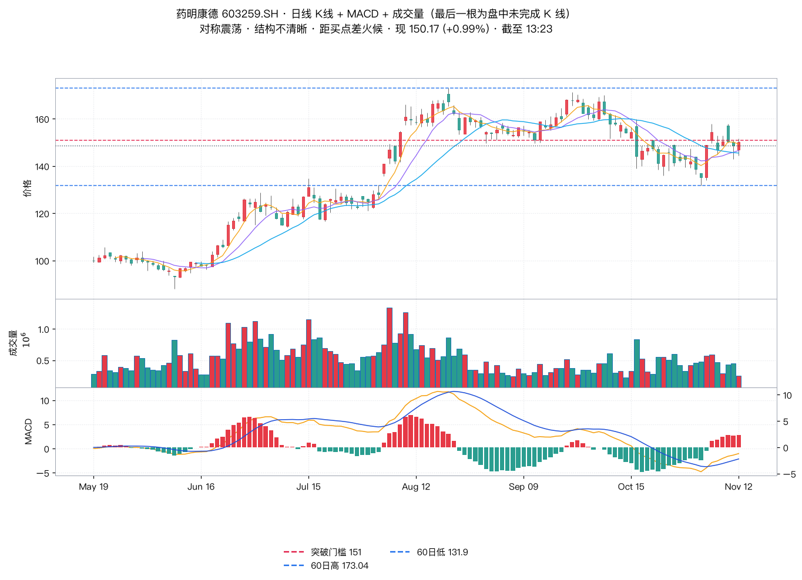
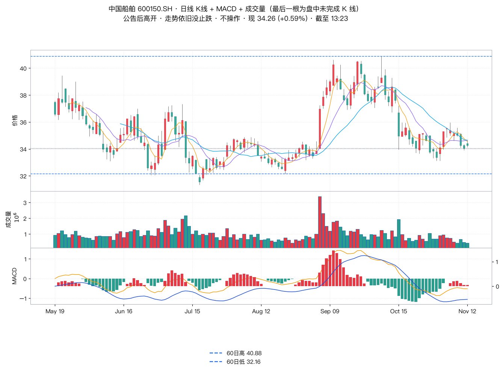
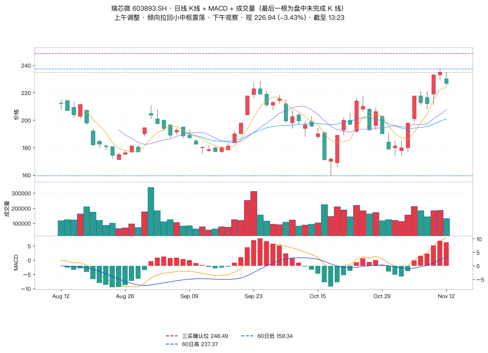
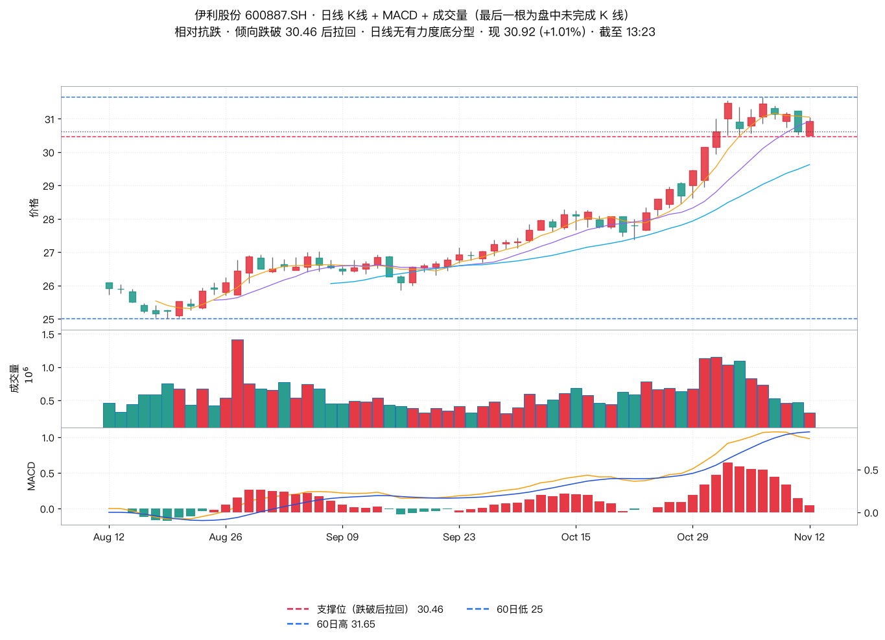
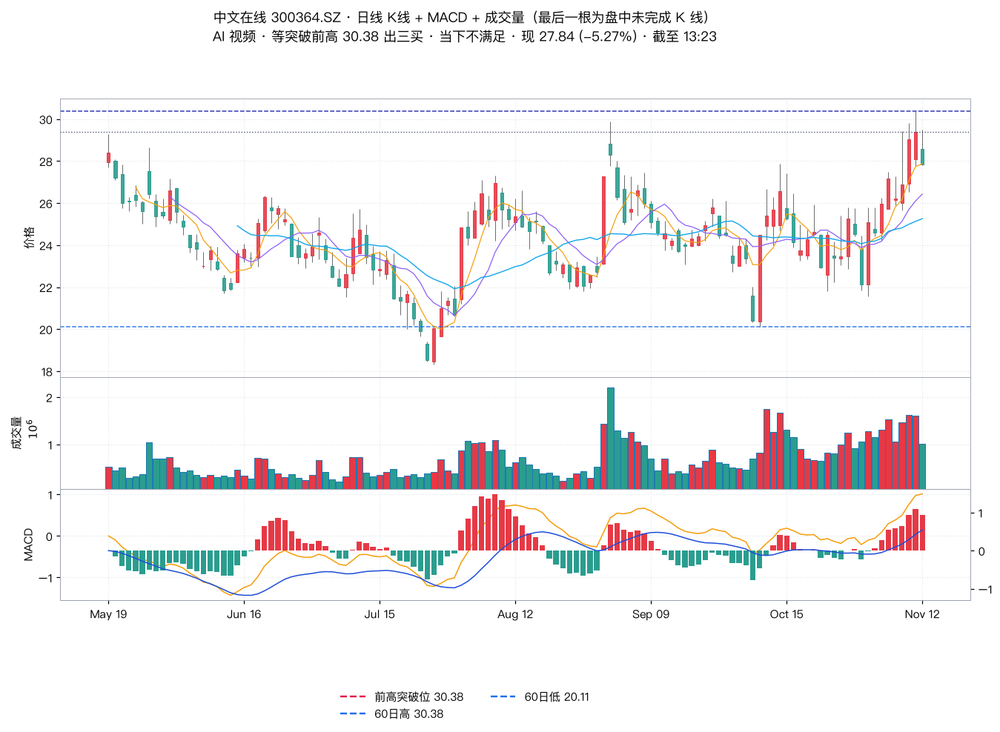
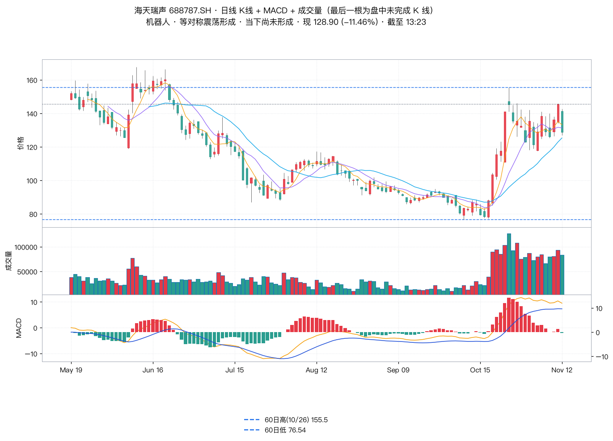
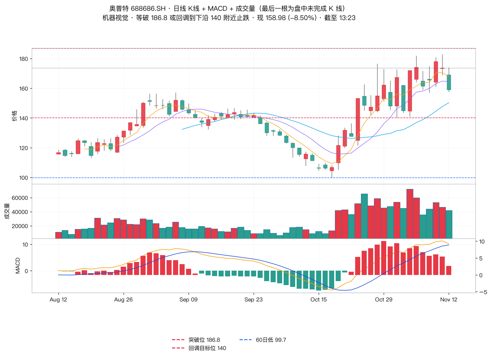
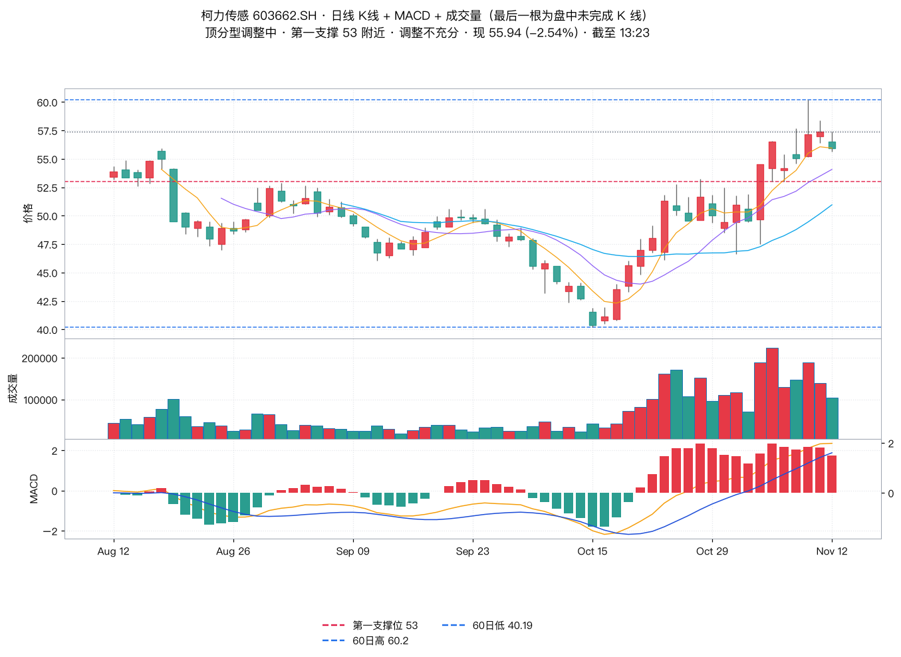
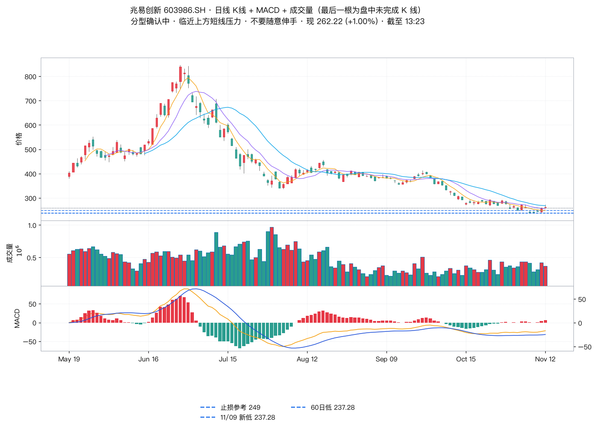
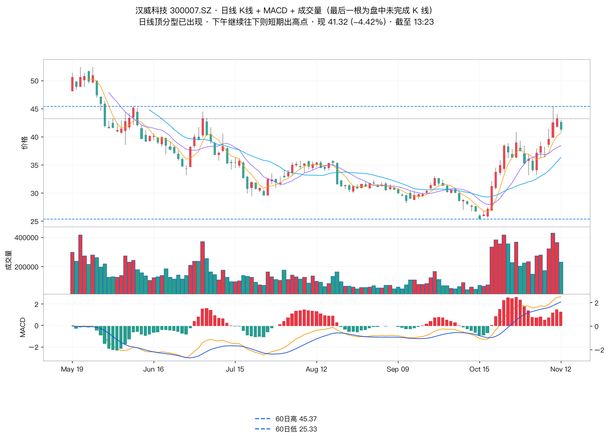
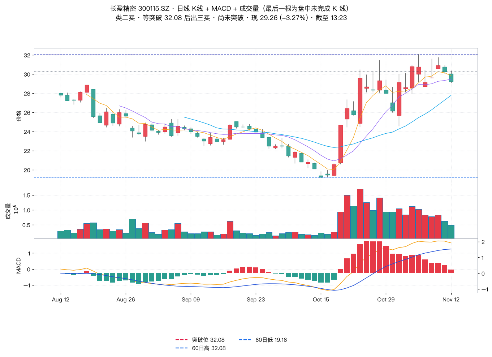
| 项目 / 老师原文 | 实测 | 判定 |
|---|---|---|
| 乐鑫科技「容易拉回」 | 166.01 (-5.31%) 续跌 | 相反 |
| 海天瑞声 / 奥普特「等结构」 | 128.90 (-11.46%)、158.98 (-8.50%)；奥普特距 140 还有 -11.2% | 偏弱 |
| 瑞芯微「倾向拉回」 | 下午续跌 -3.43% | 待观察 |
| 全A 顶背驰「下午跟踪」 | 本机无 881001 数据源，无法核验 | 无法核验 |
原文来源：都业华《高级班》2026-11-12 午评，执业编号 A0400626100004。以上内容仅供参考，不作为买卖依据，据此操作风险自担。投资有风险，入市需谨慎！本纪要为原文整理 + 独立数据核验，不构成投资建议。口径：13:23 实时快照，末根 K 线未完成、成交量为盘中累计；板块为自建篮子测算；缠论定性按「老师口径」引用，不做分钟级复算。